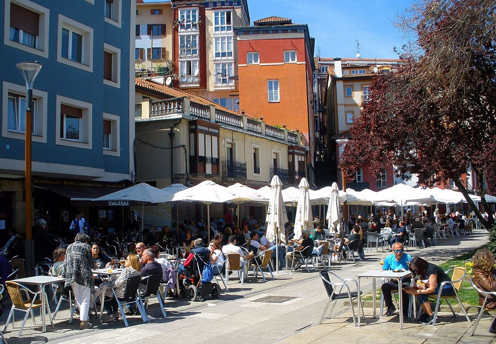

Fronteras que votan distinto · Elecciones: 23 de julio de 2023
Getxo y Portugalete, a los dos lados de la ría: el PSOE saca 21 puntos más en una orilla que en la otra
El 23J, el PSOE sacó el 39,1 % en Portugalete y el 17,7 % en Getxo, al otro lado de la ría. En Getxo ganó el PNV y el PP sacó el 25,1 %, más del doble que en Portugalete (10,8 %). La renta de Getxo (36.480 euros por unidad de consumo) es la más alta de la ría; la de Portugalete, 24.638.
Dato: verificable y reproducible

La pregunta: ¿Cuánto cambia el voto de una orilla a otra de la desembocadura de la ría de Bilbao?
Dos orillas
DatoLa desembocadura de la ría de Bilbao separa la margen derecha, con Getxo y Leioa, de la margen izquierda, con Portugalete, Santurtzi, Sestao y Barakaldo. Los centros de los términos de Getxo y Portugalete están a 3,0 kilómetros.
DatoEn la margen izquierda ganó el PSOE en los cuatro municipios, con entre el 34,9 % y el 40,0 %. En la derecha ganó el PNV: 28,3 % en Getxo y 27,8 % en Leioa.
DatoEl conjunto de Bizkaia votó así: PNV 27,0 %, PSOE 25,8 %, EH Bildu 20,7 %, PP 11,5 % y Sumar 10,9 %.
Getxo, un caso aparte
DatoGetxo es el municipio de la tabla con más renta y menos paro (10,5 % en 2021). El PP sacó allí el 25,1 %, más del doble que en el conjunto de Bizkaia. El modelo de esta serie le asigna a PP, Vox y Cs un 17,1 %; votaron un 28,4 %.
DatoEn Portugalete, la derecha sumó un 13,3 %, casi lo previsto (11,9 %).
Veinte años de la misma frontera
DatoLa distancia en el voto al PSOE no es nueva. En 2004, el PSOE sacó el 37,2 % en Portugalete y el 19,3 % en Getxo; el PP, el 19,2 % y el 28,8 %.
PatrónEn la margen izquierda, el voto socialista ha resistido el paso de los años con pocos cambios; en Getxo, el voto se reparte sobre todo entre el PNV y el PP.
Sobre el terreno
DatoGetxo y Portugalete están unidos desde 1893 por el Puente de Bizkaia, el puente colgante transbordador más antiguo del mundo, que la UNESCO declaró Patrimonio de la Humanidad en 2006. Fuentes: 1, 2
Lo que no sabemos
- HipótesisQué parte de la frontera responde a la historia industrial de la margen izquierda y qué parte a la renta. Es la hipótesis evidente, pero esta pieza no la ha contrastado con dos fuentes independientes.
Los datos
| Municipio | Renta (€/u.c.) | PNV | PSOE | PP | EH Bildu | Sumar | Gana |
|---|---|---|---|---|---|---|---|
| Getxo | 36.480 | 28,3 | 17,7 | 25,1 | 16,0 | 8,3 | PNV |
| Leioa | 28.856 | 27,8 | 25,4 | 14,1 | 15,7 | 12,4 | PNV |
| Portugalete | 24.638 | 19,7 | 39,1 | 10,8 | 14,1 | 12,4 | PSOE |
| Santurtzi | 24.136 | 20,8 | 34,9 | 9,1 | 18,5 | 12,7 | PSOE |
| Sestao | 20.916 | 17,5 | 40,0 | 8,1 | 16,5 | 13,7 | PSOE |
| Barakaldo | 23.700 | 19,1 | 38,2 | 11,1 | 13,5 | 13,1 | PSOE |
Método y fuentes
- Qué se compara
- Seis municipios de las dos márgenes de la desembocadura de la ría de Bilbao, entre sí y frente al conjunto de Bizkaia.
- Límites
- La distancia (3,0 km) es entre los centroides de los términos municipales. Datos por municipio: dentro de cada uno hay barrios muy distintos.
- Metodología completa
- Cómo se calculan los porcentajes, el modelo, los gemelos y los escaños
- Fuentes
- Ministerio del Interior, resultados electorales por mesa (Infoelectoral). Congreso 2004-2023 vía pollspaindata, commit ee5ecda; municipales 2007-2023 de los ficheros de Infoelectoral
- INE, Atlas de Distribución de Renta de los Hogares 2023 (renta, edad, población), vía ineAtlas.data
- INE, Censo de Población y Viviendas 2021 (estudios, paro, extranjeros)
- Autoría
- Nacho
- Revisión de datos y texto
- Nacho, 2026-10-07
- Publicado · actualizado
- 2026-10-06 · 2026-10-07
- Correcciones
- Ninguna. Historial del Atlas